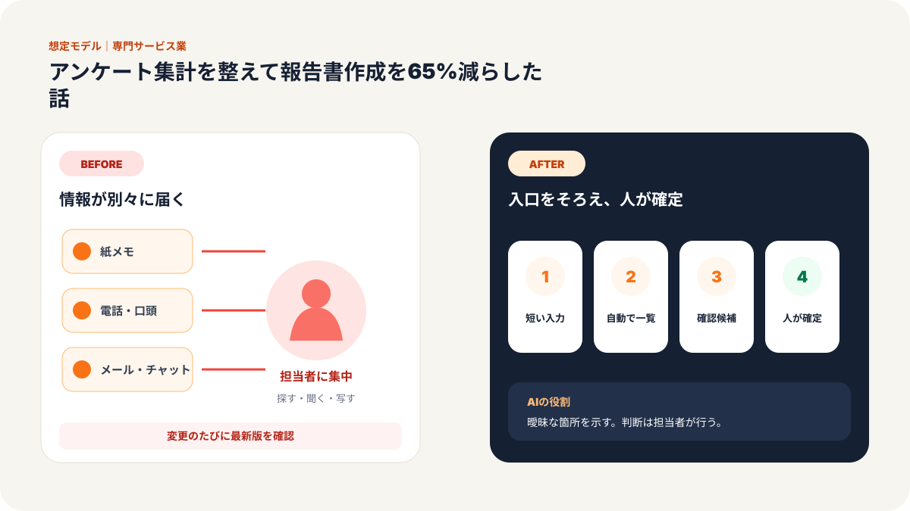
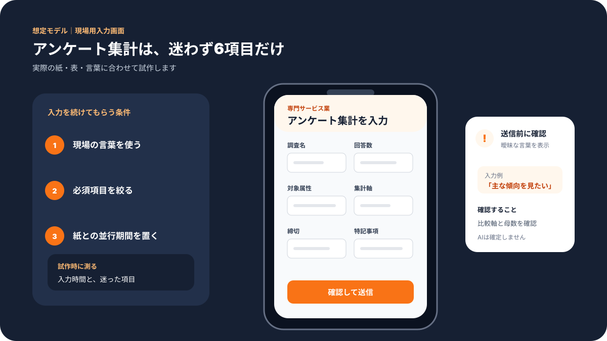
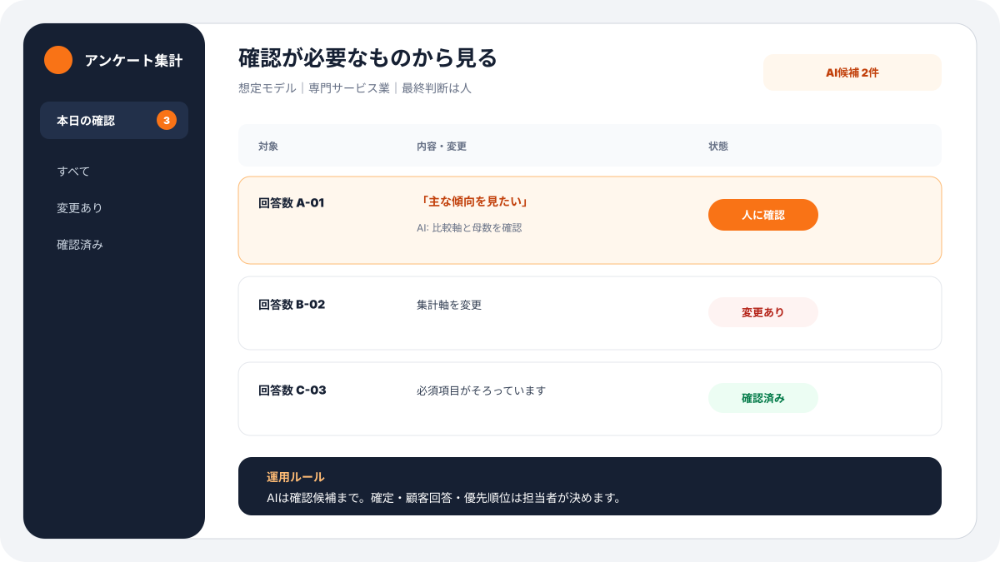
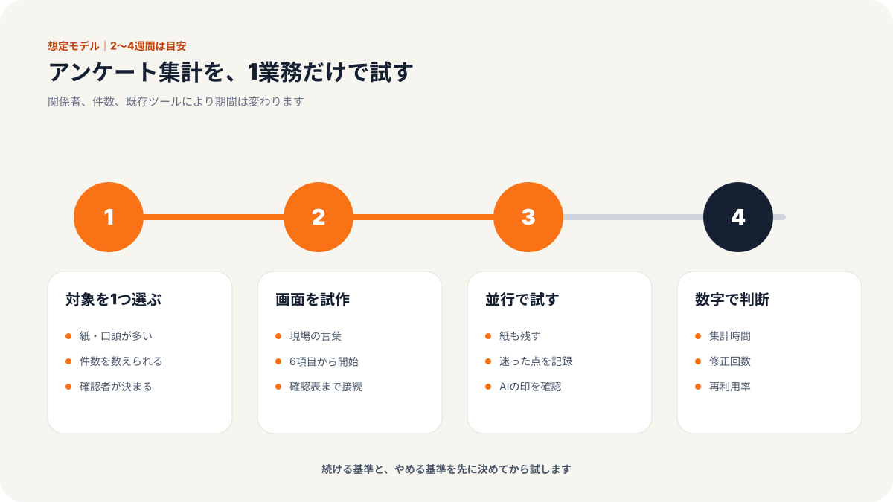
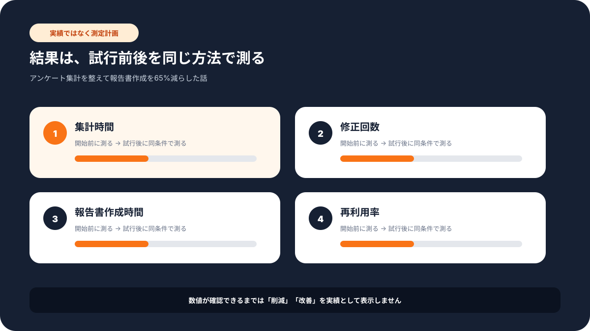

現場での使い方
この記事で変わる業務の流れ
「誰が入力し、誰が確認するか」までイメージできるよう、想定画面と導入手順をまとめています。





# 従業員14名の調査会社／アンケート集計を整えて報告書作成を65%減らした話
> 専門サービス業 × 調査・レポート作成 × 従業員14名の事例
課題：集計よりも、報告書のたたき台作りに時間がかかっていた
従業員14名の調査会社C社では、企業向けのアンケート調査や顧客満足度調査を行っていました。
調査そのものの設計や分析力には強みがあります。一方で、毎回負担になっていたのが、回収後の集計と報告書作成でした。
担当者はこう話していました。
「数字を出すところまでは何とかなるんです。大変なのは、そこから文章にするところです」
アンケート結果は表計算ソフトで集計します。しかし、自由記述の分類、グラフの説明、前回調査との差分、改善提案の下書きは人がかなり時間をかけていました。
1案件あたりの報告書作成時間は、平均18時間。
繁忙期には、複数案件が重なり、担当者が夜に文章を整えることもありました。
課題は主に3つでした。
- 自由記述の分類に時間がかかる
- グラフから読み取れる内容を文章化するのが重い
- 報告書の型が担当者ごとに違う
マネージャーはこう言いました。
「分析の質を上げたいのに、体裁を整える時間に追われています」
ここを改善することにしました。
施策：集計、分類、報告書の流れを分けて整えた
弊社では、報告書作成を丸ごとAIに任せるのではなく、作業を3つに分けました。
1つ目は、データを整えること。
2つ目は、自由記述を分類すること。
3つ目は、報告書のたたき台を作ること。
ステップ1：調査データの形式をそろえる
まず、案件ごとにバラバラだった入力形式をそろえました。
質問番号、選択肢、回答数、自由記述、属性情報を決まった列に入れる形にします。
これにより、案件が変わっても同じ流れで処理できるようになりました。
担当者からは、最初にこう言われました。
「毎回フォーマットが微妙に違うので、そこをそろえるだけでも助かります」
まさにその通りです。
AIを使う前に、情報の置き方をそろえることが重要でした。
ステップ2：自由記述をAIで分類する
次に、自由記述の分類をAIで補助しました。
例えば、顧客満足度調査であれば、自由記述を次のように分類します。
- 価格への不満
- 接客への評価
- 納期への不満
- 商品品質への意見
- 再購入意向に関するコメント
AIは、回答を読んで分類案を出します。
ただし、最終分類は担当者が確認します。
担当者はこう話していました。
「ゼロから分類するのではなく、AIの案を直すだけになったのが大きいです」
ここでも、AIに判断を丸投げしていません。
たたき台を作り、人間が確認する形にしました。
ステップ3：報告書のたたき台を自動で作る
最後に、グラフや集計結果から、報告書のたたき台を作る流れを作りました。
例えば、満足度が前回より下がっている項目があれば、AIが次のような下書きを作ります。
- 前回との差分
- 自由記述で多かった意見
- 考えられる背景
- 確認すべき追加情報
- 改善提案の候補
もちろん、そのまま納品はしません。
担当者が内容を確認し、顧客企業の事情に合わせて直します。
マネージャーはこう言いました。
「最初の白紙状態がなくなっただけで、かなり気持ちが楽です」
報告書作成では、この白紙状態が大きな負担です。
AIはそこを減らす役割に向いています。
成果：報告書作成時間が18時間から6時間へ
導入後、1案件あたりの報告書作成時間は平均18時間から6時間ほどに減りました。
| 項目 | Before | After |
|---|---|---|
| 自由記述の分類 | 5時間 | 1.5時間 |
| グラフ説明文の作成 | 4時間 | 1時間 |
| 報告書たたき台 | 6時間 | 2時間 |
| 最終確認・修正 | 3時間 | 1.5時間 |
| 合計 | 18時間 | 6時間 |
全体で約65%の削減です。
さらに、担当者ごとの報告書のばらつきも減りました。
以前は、文章の粒度や見出しの付け方が担当者によって違っていました。導入後は、報告書の型がそろい、レビューもしやすくなりました。
若手担当者からは、こんな声がありました。
「先輩の報告書を真似しながら書く時間が減りました。どこを直せばいいかに集中できます」
教育面でも効果が出ました。
なぜ効果が出たのか
今回のポイントは、AIに分析責任を任せなかったことです。
調査会社にとって、分析の品質は重要です。AIが出した文章をそのまま納品してしまうと、顧客の事情に合わない表現になる危険があります。
そこで、AIの役割を次の3つに限定しました。
1. 自由記述の分類案を出す
2. グラフ説明のたたき台を作る
3. 報告書の構成をそろえる
最終判断は、担当者とマネージャーが行います。
この分担があるからこそ、品質を落とさずに時間を減らせました。
他の業種でも応用できる
この仕組みは、調査会社だけではありません。
- 人材会社：面談アンケートの分類とレポート作成
- 研修会社：受講後アンケートの集計と改善提案
- 医療・介護施設：利用者アンケートの傾向整理
- 学習塾：保護者アンケートの分類と報告資料作成
- 商業施設：来店者アンケートの集計と施策案作成
共通しているのは、自由記述や数字を見て、文章にまとめる作業が多いことです。
AIは、白紙からのたたき台作成に向いています。
ただし、最終判断は人間が行う。
この役割分担を守ると、安心して使いやすくなります。
品質を落とさないために確認したこと
もう一つ意識したのは、AIが作った文章を「それらしく見えるから採用する」状態にしないことでした。調査レポートでは、読みやすさだけでなく、数字とコメントがきちんと対応していることが重要です。
そこで、報告書の各見出しに対して、確認者が見る項目を3つに絞りました。
- 数字と文章が合っているか
- 自由記述の一部だけを強く拾いすぎていないか
- 顧客企業に断定しすぎた提案になっていないか
この確認表を作ったことで、若手担当者もどこを見ればよいか分かりやすくなりました。
定着のために決めた小さなルール
導入後、C社ではAIが作った文章に必ず「根拠メモ」を付ける運用にしました。どの設問、どの自由記述、どのグラフをもとに書いたのかを、担当者が確認できるようにしたのです。
「文章はきれいだけど、根拠が追えないものは使わない」
このルールを決めたことで、AIの下書きを安心して使えるようになりました。専門サービス業では、速さだけでなく説明できることが大切です。
まとめ：報告書作成は、AIに書かせる前に流れを分ける
C社では、調査データの形式をそろえ、自由記述の分類と報告書たたき台をAIで補助することで、作成時間を約65%減らせました。
大切なのは、報告書を丸投げしないことです。
データを整える。
分類案を作る。
たたき台を作る。
人間が確認する。
この流れを作ることで、AIは専門サービス業の強い味方になります。
気になる業務があれば、お気軽にお声がけください。
弊社では中小企業のAI活用・システム開発の伴走支援を行っています。